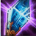

简介
同样是由猛禽斗篷合成的黑科技武器，黑到能够暂停防御塔攻击三秒，这不简直就是越塔杀人必备吗？首先从基础属性上分析，300点生命值比大腰带要逊色一些，50点护甲也只是中规中矩。但是不要小看100%基础生命回复，假设一个英雄每秒回20点血，增加100%就变成每秒40点血。这对于打长时间的团战或者消耗战来说都是非常有利的，同时还有10%的冷却缩减。被动效果和兹若特传送门一样，不多做介绍。
同样是由猛禽斗篷合成的黑科技武器，黑到能够暂停防御塔攻击三秒，这不简直就是越塔杀人必备吗？首先从基础属性上分析，300点生命值比大腰带要逊色一些，50点护甲也只是中规中矩。但是不要小看100%基础生命回复，假设一个英雄每秒回20点血，增加100%就变成每秒40点血。这对于打长时间的团战或者消耗战来说都是非常有利的，同时还有10%的冷却缩减。被动效果和兹若特传送门一样，不多做介绍。